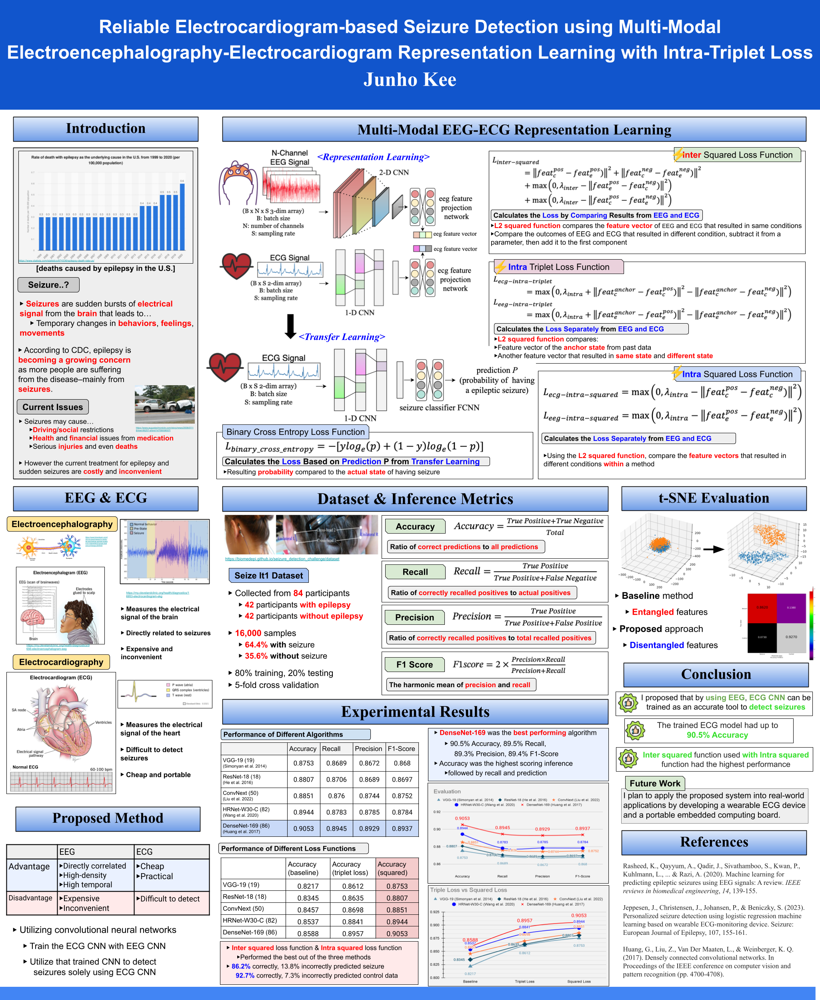
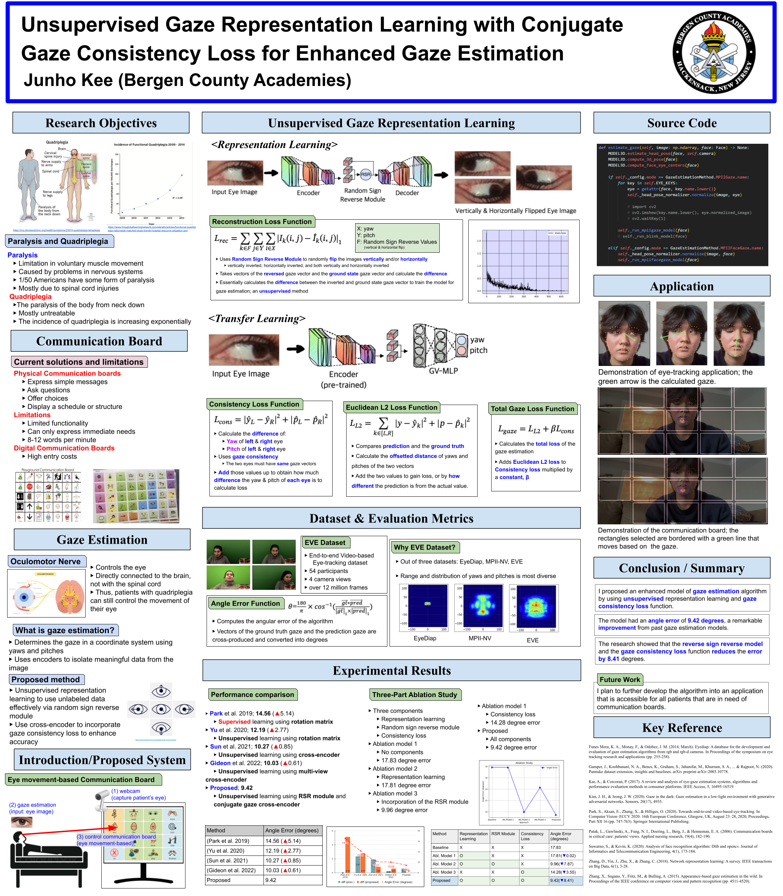

Reliable Electrocardiogram-based Seizure Detection using Multi-Modal Electroencephalography-Electrocardiogram Representation Learning with Intra-Triplet Loss
As more people are suffering from epilepsy and seizures by the year, ways to cure or detect these sudden seizure attacks are becoming a vital issue. Current methods of medical treatment or seizure detection devices are not practical, though: the current epilepsy treatment is very costly and the most direct way of detecting seizures, electroencephalography–the method of detecting electrical signals from the brain–is also expensive and inconvenient. Thus, I propose to use an alternate method, utilizing a seizure-detection algorithm that utilizes electrocardiography–which detects the electrical signals from the heart–trained by EEG seizure-detection algorithm as EEG is relatively much simpler to detect patterns before sudden seizures from occurring. I trained the algorithms by utilizing previously discovered seizure-detecting convolutional neural networks and by testing three different loss functions to discover the best performing method. In the final analysis, the DenseNet-169 algorithm performed the best with 90.53% accuracy utilizing the inter squared and intra squared loss functions together.
 Read Research PaperUnsupervised Gaze Representation Learning with Conjugate Gaze Consistency Loss for Enhanced Gaze Estimation
Patients suffering from quadriplegia and other paralysis that interfere with the ability to communicate have been increasing for the past decade, and in turn, the need for better communication boards have been growing. Current communication boards, both physical and digital communication boards, all have flaws starting from the need of an assistant to the sole expense of the device. However, gaze estimation techniques have also been gaining attention to enhance the quality of communication boards by tracking the movement of the eye via a camera to assess what the user is trying to communicate. Previous studies on gaze estimation algorithms have shown that collecting data for accurate gaze values is an arduous task, and that the accuracy of the gaze estimation models has been unsatisfactory for practical use. Thus, I propose a gaze estimation-based digital communication board system that combines gaze representation learning with transfer learning. In the representation learning phase, I introduce a random sign-reversal module to efficiently isolate gaze-related features. In the transfer learning phase, I implement a medically driven loss function to enhance the system's accuracy. The proposed system achieved an angular error of 9.42 degrees which represents state-of-the-art performance compared to previous studies.
 Read Research Paper